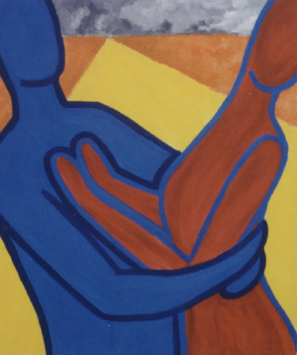

|
|
|
|
|
|
| The Fourth (of 6) | |
|  | The Clash
She pushes away as he pulls her in, his essence crawling all over her. If you have ever seen the work of Keith Haring, he may come to mind at this point. While I was familiar with his art when I painted this, it was my art teacher who observed correctly when she said I seemed to be inspired by Mark Kostabi (I find his 1996 Counter Intelligence rather ironic). I feel a little guilty about liking 'his' work because of the controversy surrounding him, but if you know your art history, you know that Andy Warhol was the same way. Kostabi hardly paints any of 'his' works, but his studio produces hundreds of paintings each year. If you don't agree that he's a painter, you can at least agree that he is some kind of genius. This painting is my personal favourite. It was the first painting in the series to turn out exactly as I had intended. I particularily like the sky. |
I'd love to hear any of your thoughts or interpretations of my art.
If you have a collection of art works, I'd love to see it too.
email me